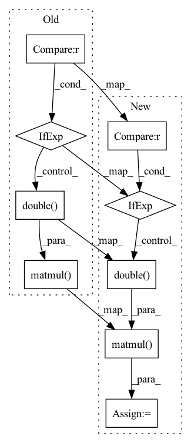

Pattern ID :126

Before Change
MLSA filter coefficients.
b = torch.matmul(c, self.A if c.dtype == self.A.dtype else self.A.double())
return b
After Change
MLSA filter coefficients.
A = self.A if mc.dtype == self.A.dtype else self.A.double()
b = torch.matmul(mc, A)
return b
In pattern: SUPERPATTERN
Frequency: 3
Non-data size: 9
Instances
Fragment ID: 484853
Project Name: sp-nitech/diffsptk
Commit Name: 1a00aca4573f667ebc80cc24dbf4c978fc99f1fb
Time: 2022-03-12
Author: takenori.yoshimura24@gmail.com
File Name: diffsptk/mc2b.py
M Class Name: MelCepstrumToMLSADigitalFilterCoefficients
N Class Name: MelCepstrumToMLSADigitalFilterCoefficients
M Method Name: forward(2)
N Method Name: forward(2)
M Parent Class: nn.Module
N Parent Class: nn.Module
M File Name: diffsptk/mc2b.py
N File Name: diffsptk/mc2b.py
M Start Line: 66
M End Line: 66
N Start Line: 68
N End Line: 69
'>
Before Change
Warped sequence.
y = torch.matmul(x, self.A if x.dtype == self.A.dtype else self.A.double())
return y
After Change
Warped sequence.
A = self.A if x.dtype == self.A.dtype else self.A.double()
y = torch.matmul(x, A)
return y
'>
Fragment ID: 484850
Project Name: sp-nitech/diffsptk
Commit Name: 1a00aca4573f667ebc80cc24dbf4c978fc99f1fb
Time: 2022-03-12
Author: takenori.yoshimura24@gmail.com
File Name: diffsptk/freqt.py
M Class Name: FrequencyTransform
N Class Name: FrequencyTransform
M Method Name: forward(2)
N Method Name: forward(2)
M Parent Class: nn.Module
N Parent Class: nn.Module
M File Name: diffsptk/freqt.py
N File Name: diffsptk/freqt.py
M Start Line: 79
M End Line: 79
N Start Line: 81
N End Line: 82
'>
Before Change
Mel-cepstral coefficients.
c = torch.matmul(b, self.A if b.dtype == self.A.dtype else self.A.double())
return c
After Change
Mel-cepstral coefficients.
A = self.A if b.dtype == self.A.dtype else self.A.double()
mc = torch.matmul(b, A)
return mc
'>
Fragment ID: 484848
Project Name: sp-nitech/diffsptk
Commit Name: 1a00aca4573f667ebc80cc24dbf4c978fc99f1fb
Time: 2022-03-12
Author: takenori.yoshimura24@gmail.com
File Name: diffsptk/b2mc.py
M Class Name: MLSADigitalFilterCoefficientsToMelCepstrum
N Class Name: MLSADigitalFilterCoefficientsToMelCepstrum
M Method Name: forward(2)
N Method Name: forward(2)
M Parent Class: nn.Module
N Parent Class: nn.Module
M File Name: diffsptk/b2mc.py
N File Name: diffsptk/b2mc.py
M Start Line: 63
M End Line: 64
N Start Line: 65
N End Line: 67